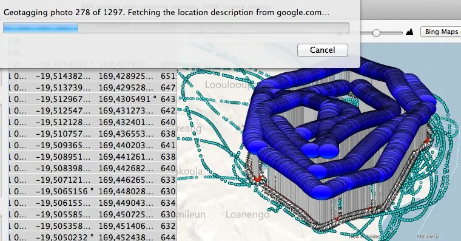

Le traitement des photographies commence. Notre premier travail est de georeferencier celles-ci.
Le module automatise du Nikon a a peu pres fonctionne, en revanche, le GPS JOBO du Canon a ete totalement hors-jeu.
Il nous faut donc utiliser les coordonnees enregistrees par le GPS de secours pour geolocaliser les photos, ce qui promet d'etre long et fastidieux... sachant que nous avons 60 000 photos a traiter !!!
